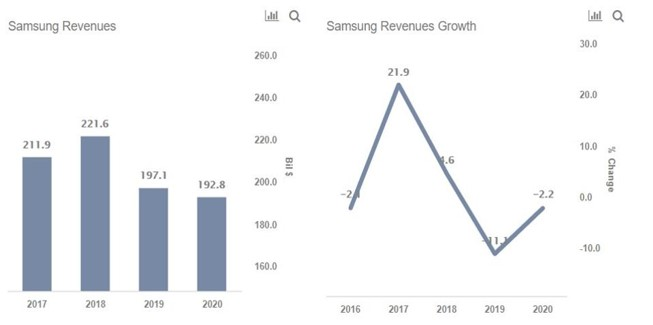

Market Trends
1.存储器合约价转跌可能性越来越高 （全球半导体观察 2020-04-07)
随着新冠病毒在全球蔓延，各国防疫措施不断升级，全球经济表现也出现急剧疲软的态势。
鉴于此，日前，全球高科技产业研究机构TrendForce集邦咨询半导体研究中心（DRAMeXchange）日前宣布今年以来第二次下修2020年全球智能手机生产总数预测至12.96亿支，YoY衰退幅度达7.5%。
集邦咨询表示，疫情的冲击对智能手机产业的影响主要体现在三个方面：
(一)消费者消费欲望转向保守，导致需求向后递延，换机周期再延长；
(二)预期的收入减少，使得单机平均消费金额(ASP)下降；
(三)受疫情影响，产业供应链人事支出增加以及贸易汇差等，将持续恶化品牌获利表现，市占可能面临重新洗牌。
由于终端需求的下滑，可以预见，上游零部件也将受到相应的影响，其中存储器作为智能手机最重要的部件之一，自然也难幸免。
2.RAM市场刚回暖，存储三雄已开战（中国电子报 2020-04-21)
DRAM第一季度价格回暖，“存储三雄”三星、美光、海力士围绕DRAM的新一轮竞争已经开始。三星将EUV导入DRAM，DDR5及LPDDR5等新产品的崛起，透露哪些迭代趋势?在寒意犹存的第二季度，三大内存企业的产能布局有什么侧重点，聚焦哪些市场方向?
DRAM迈向EUV时代。
三星于近期宣布，已经成功出货了一百万个基于EUV技术的10nm级(D1x)DDR4模块，成为首个在DRAM生产中使用EUV的企业。目前三星的EUV DDR4模块已经完成了全球范围的客户评估，将为高端PC、手机、企业服务器、大数据等应用使用更先进的EUV技术开启大门。
EUV光刻是逻辑IC 7nm及以下制程的关键技术，能够提升产能，降低单片生产成本。EUV波长仅为13.5nm，远远小于DUV光刻机的193nm，能实现更高的分辨率，打造更小更快的芯片。台积电的7nm加强版N7+以及后续的6nm、5nm、3nm工艺都将使用EUV设备，三星也从7nm节点开始使用EUV设备并将一直沿用到3nm工艺的开发。
3.Gartner Says Worldwide Semiconductor Revenue Declined 12% in 2019 （Gartner, 2020-04-15）
Worldwide semiconductor revenue totaled $419.1 billion in 2019, down 12% from 2018, according to final results by Gartner, Inc.
“Oversupply in the DRAM market helped push the overall memory market down 32.7% 2019. The memory market accounted for 26.1% of semiconductor sales in 2019 and was the worst-performing device segment,” said Andrew Norwood, research vice president at Gartner. “The U.S.-China trade war distorted sales throughout the year and was an additional headwind to revenue growth for the overall global semiconductor market. During 2019, this brewing trade war seemed the most imminent danger to the world economy, but with the current spread of the COVID-19 virus, trade wars seem a minor issue in comparison.”
Intel regained the No. 1 position in the market as the downturn in the memory market negatively impacted many of the top vendors, including Samsung Electronics, the No. 1 vendor by revenue in 2018 and 2017 (see Table 1).
4.U.S. imposes new rules on exports to China to keep them from its military （REUTERS, 2020-04-27)
The United States said on Monday it will impose new restrictions on exports to China to keep semiconductor production equipment and other technology away from Beijing’s military.
The new rules will require licenses for U.S. companies to sell certain items to companies in China that support the military, even if the products are for civilian use. They also do away with a civilian exception that allows certain U.S. technology to be exported without a license.
They come as relations between the United States and China have deteriorated amid the new coronavirus outbreak.
The rules, which were posted for public inspection and will be published in the Federal Register on Tuesday, could hurt the semiconductor industry and sales of civil aviation parts and components to China.
Vendor News
1.SK Hynix DDR5 DRAM Mass Production Starts This Year, DDR5-8400 Modules On The Horizon (Hothardware, 2020-04-02）
It’s about that time again in the desktop market to switch to a new memory standard. We first began the transition from DDR3 to DDR4 six years ago, and now memory suppliers are laying the groundwork for the leap from DDR4 to DDR5.
So, what kind of advantages will DDR5 offer over its predecessor? Well, SK Hynix is claiming that DDR5 will ultimately offer twice the bandwidth currently available with DDR4 modules. With processor core counts increasingly skyrocketing on modern processors (consumer desktop processors can hit 16 cores and 32 threads, with prosumer platforms hitting the 64-core/128-thread), SK Hynix says that the next-generation DDR5 is poised to help satisfy these bandwidth needs.
Current DDR4 modules top out at a JEDEC-certified DDR4-3200, although we’ve definitely seen some modules “boosted” to DDR4-4866 speeds (we’re looking at you, Corsair). DDR5 will provide at least a 50 percent boost in bandwidth, meaning that DDR5-4800 should commonplace once the first modules start hitting the market. But speeds will ramp up from there, with SK Hynix claiming that JEDEC speeds will reach DDR5-8400 in the future.
2.Why Coronavirus Could Help Samsung’s Memory Division （Forbes, 2020-04-20)
Samsung Electronics’ (NYSE: SSNLF) total revenues declined from $212 billion in 2017 to $197 billion in 2019 and are estimated to decline by about 3% to $193 billion in 2020. The decline over 2020 is likely to be driven by an 8% decline in IT & Mobile revenues, as the spread of the novel Coronavirus hurts the uptake of the company’s new 5G handsets. However, this will be partly offset by the stronger performance of the semiconductor business, which could benefit from higher memory demand from the cloud computing and personal computing market.

3.三星电子Q1净利润4.89万亿韩元 预计Q2业绩将下滑（新浪科技 2020-04-29)
4月29日早间消息，三星电子公布2020年第一季度财报。数据显示，该公司第一财季实现净利润4.89万亿韩元（40亿美元），较去年同期下滑3.1%。该公司当季总收入为55.33万亿韩元（约合450亿美元），较上一季度减少7.6％，主要源自显示器业务和消费电子业务部门的季节性疲软以及新冠疫情冲击。但由于对服务器和移动设备组件的需求增加，公司收入较上年同期增长了5.6％。
三星表示，受疫情影响预计二季度业绩将下滑。疫情带来的不确定性将持续至下半年。
其中，营业利润较上一季度下降0.7万亿韩元，至6.45万亿韩元（约合53亿美元）。尽管内存利润增加，但影响收入的因素也对营业利润率构成压力。与上年同期相比，营业利润增加了0.2万亿韩元，这得益于移动业务产品组合的改善以及公司移动OLED客户基础的进一步多样化。
本季度，外汇变动对整体营业利润影响不大，因为美元和欧元对韩元走强（主要在零部件业务中产生）的积极影响被主要新兴市场货币的疲软所抵消。
4. Micron’s Low-Power DDR5 DRAM Boosts Performance and Consumer Experience of Motorola’s New Flagship Edge+ Smartphone Micron Technology, 2020-04-22)
Micron Technology, Inc. (Nasdaq: MU), together with Motorola, today announced integration of Micron’s low-power DDR5 (LPDDR5) DRAM into Motorola’s new motorola edge+ smartphone, bringing the full potential of the 5G experience to consumers. Micron and Motorola worked in close collaboration to enable the edge+ to reach 5G network speeds that require maximum processing power coupled with high bandwidth memory and storage.
With 12 gigabytes (GB) of industry-leading Micron LPDDR5 DRAM memory, motorola edge+ delivers a smooth, lag-free consumer experience. The new phone takes advantage of the faster data speeds and lower latency of 5G to increase the performance of cloud-based applications such as gaming and streaming entertainment.
“Our collaboration with Motorola on its flagship smartphone highlights the importance that mobile device manufacturers are placing on next-generation memory solutions that provide higher performance and richer consumer experiences,” said Dr. Raj Talluri, senior vice president and general manager of the Mobile Business Unit at Micron. “This announcement underscores how the mobile industry is coalescing behind Micron’s LPDDR5 for 5G flagship smartphone designs.”
5.长鑫存储与Rambus签署专利许可协议 (长鑫存储2020-04-27)
日前，长鑫存储技术有限公司（以下简称“长鑫存储”）与美国半导体公司Rambus Inc.（以下简称“蓝铂世”）签署专利许可协议。依据此协议，长鑫存储从蓝铂世获得大量动态随机存取存储（以下简称“DRAM”）技术专利的实施许可。
长鑫存储董事长兼首席执行官朱一明表示：“与蓝铂世达成的协议再次表明，长鑫存储高度重视知识产权相关的国际规则，持续强化知识产权组合。公司致力于通过自主研发与国际合作，不断增加在半导体核心技术和高价值知识产权方面的积累，并以此为基础实现可持续发展，稳步提升市场竞争力。”
蓝铂世总裁兼首席执行官Luc Seraphin表示：“在中国DRAM市场投资显著增长的背景下，长鑫存储脱颖而出，成为中国DRAM产业的引领者。我们高兴地看到长鑫存储走上DRAM产业的国际舞台。这份长期协议的签署为长鑫存储的业务发展提供权益保障，同时认可了蓝铂世广泛的存储技术专利组合的重要价值。”
根据双方达成的一致，此协议中的其它详细信息不予披露。
6.Chinese DRAM Maker CXMT Signs Patent Deal With Rambus (Tom’s Hardware 2020-04-28)
ChangXin Memory Technologies (CXMT) announced that it signed a patent license agreement with Rambus to get access to a wide variety of DRAM patents. The details of the deal remain a mystery except that it’s a long-term agreement, suggesting it’s a cooperation that will last for a few years at the very least.
In a matter of four years, ChangXin Memory Technologies has risen to become China’s largest DRAM manufacturer. The chipmaker is a crucial piece in the domestic semiconductor industry as China continues its push for tech self-sufficiency. ChangXin Memory Technologies currently produces DDR4 and LPDDR4X products. However, Rambus’ expertise will not only help strengthen but also diversify ChangXin Memory Technologies’ intellectual property (IP) portfolio.
Prior to the arrangement with Rambus, ChangXin Memory Technologies signed a patent licensing deal with Polaris Innovations Limited. The contract would allow ChangXin Memory Technologies to tap into DRAM patents developed by Qimonda, which was at one time the second largest DRAM maker in the world.
New Technology
1.这篇文章，把新型存储说清楚了(中国电子报 2020-04-01）
新型存储主要指相变、磁变、阻变存储
目前，受到广泛关注的新型存储器主要有3种：相变存储器(PCM)，以英特尔与美光联合研发的3D Xpoint为代表;磁变存储器(MRAM)，以美国Everspin公司推出的STT-MRAM为代表;阻变存储器(ReRAM)，目前暂无商用产品，代表公司有美国Crossbar。
事实上，上述新型存储器已经被研究了数十年，只是相对于早已产业化的SRAM、DRAM、和NAND Flash，还未能大规模商用。存储产业未来的技术发展方向仍是未知数。
新型存储核心是解决“存储墙”问题
“存储墙”问题来源于当前计算架构中的多级存储，随着处理器性能的不断提升，这一问题已经成为制约计算系统性能的主要因素。当前主流的计算系统，从大型服务器集群、PC、再到智能手机，无一例外地都采用冯诺依曼架构，其特点在于程序存储于存储器中，与运算控制单元相分离。为了满足速度和容量的需求，现代计算系统通常采取高速缓存(SRAM)、主存(DRAM)、外部存储(NAND Flash)的三级存储结构，如图所示。越靠近运算单元的存储器速度越快，但受功耗、散热、芯片面积的制约，其相应的容量也越小。SRAM响应时间通常在纳秒级，DRAM则一般为100纳秒量级，NAND Flash更是高达100微秒级，当数据在这三级存储间传输时，后级的响应时间及传输带宽都将拖累整体的性能，形成“存储墙”。